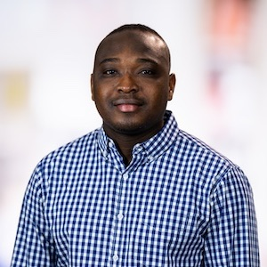

Math 152: Linear systems
- Section 208, Spring 2017
- Lectures 8:00 - 9:30 am Tuesdays and Thursdays in MATX 1100
- Office hours: Tuesdays 2:00 - 3:00 and Thursdays 1:00 - 3:00 in LSK 300
Applied Mathematician & Mathematical Biologist
Research Scientist
Vaccine & Immunology Statistical Center,
Vaccine and Infectious Disease Division,
Fred Hutchinson Cancer Center, Seattle, WA.
A Brownian particle on a reflecting disk, hunted by a rotating absorbing trap.
About

I am an Associate Research Scientist in Hyrien Lab,
and also a member of the Vaccine & Immunology Statistical Center (VISC), in the Biostatistics, Bioinformatics and Epidemiology (BBE) Program,
of the Vaccine and Infectious Disease Division (VIDD) at Fred Hutchinson Cancer Center.
I am an MGB-SIAM Early Career Fellow.
Prior to this, I was a Post-doctoral Research Associate at the Theoretical Biology and Biophysics group of the Los Alamos National Laboratory,
New Mexico, USA, working with Alan S. Perelson,
Ruy M. Ribeiro,
and Ruian Ke. I obtained my Ph.D. from the
Department of Mathematics and the Institute of Applied Mathematics (IAM) of the University of British Columbia (UBC), Vancouver, working with
Michael Ward, Colin Macdonald,
and Daniel Coombs.
Before my studies at UBC, I obtained a Masters degree in Mathematical Sciences from Stellenbosch University, South Africa, through the fully funded scholarship program offered by the
African Institute for Mathematical Sciences (AIMS), Cape Town, South Africa.
Research
Teaching
Topics: First-order equations, linear equations, linear systems, Laplace transforms, numerical methods, trajectory analysis of plane nonlinear systems. Applications of these topics will be emphasized.
Corpus Christi College, Vancouver
University of Washington, Department of Applied Mathematics
Course: AMATH 423/523: Mathematical Analysis in Biology and Medicine
Grants and Awards
HIV Vaccine Trials Network (HVTN) Travel Award
Award to attend the 2026 HVTN Translational HIV Vaccine Early-Stage Investigator (ESI) Conference and NHP AIDS Symposium.
San Antonio, Texas, U.S.A.
HIV Vaccine Trials Network (HVTN) Scientific Pilot Award
Period: July 2026 - June 2027.
The Life Sciences and Dynamical Systems Travel Award
Award to attend the 2024 SIAM Conference on the Life Sciences (LS24)
Portland, Oregon, U.S.A., June 10 - 13, 2024.
Period: 2024 - 2026.
African Institute for Mathematical Sciences (AIMS) Fully-funded Master's Scholarship for African Students, South Africa.
Best Graduating Student, Faculty of Sciences, University of Ilorin, Nigeria.
Best Graduating Student, Department of Mathematics, University of Ilorin, Nigeria.
Silver Award Winner, Annual Nigerian National Mathematics Competition for University Students (NAMCUS), National Mathematical Center (NMC), Nigeria.
University Undergraduate Scholarship, University of Ilorin, Nigeria.
Some conferences, workshops, and other events I co-organized or participated in
Mini-symposium: Mathematical Modeling and Immunological Perspectives on Infectious Diseases (Parts I - III)
SIAM Conference on the Life Sciences 2026
Date: July 5 – 9, 2026.
Venue: Huntington Convention Center of Cleveland, Ohio, USA.
Mini-symposium: First Passage Phenomena in Brownian and Active Matter
Canadian Applied and Industrial Mathematics Society Annual Meeting 2026
Date: Jun 15 – 19, 2026.
Venue: University of Regina, Saskatchewan, Canada.
Mathematical modelling for model-informed drug development and virtual clinical trial (MMAVCT 2023)
Date: May 1-2, 2023
Venue: Virtual
UBC Math-Bio Fall 2021 Welcome back event
Date: Wednesdays, 15 September 2021 at 2:00 - 3:00 PM
Venue: Virtual
Panel member: Equality, Diversity and Inclusion in Mathematics: An open discussion of Equality, Diversity and Inclusion in Mathematics
CAIMS/SCMAI Annual Meeting 2021
Date: June 23, 2021
Venue: Virtual
UBC weekly Math-Bio Seminar: April 2021 to October 2021
Date: Wednesdays at 2:05 PM - 3:05 PM
Venue: Virtual
Frontiers in Biophysic Conference 2020 (Postponed to next year)
Venue: TBA.
Fourteenth Annual Institute of Applied Mathematics (IAM), UBC Retreat 2018
Venue: Minnekhada Lodge.
Thirteenth Annual Institute of Applied Mathematics (IAM), UBC Retreat 2017
Venue: Mount Seymour.
Twelfth Annual Institute of Applied Mathematics (IAM), UBC Retreat 2016
Venue: Corrigan nature house, 2645 Dollarton Highway, North Vancouver, BC V7H 1B1.